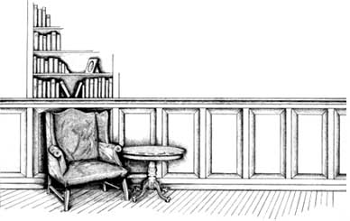
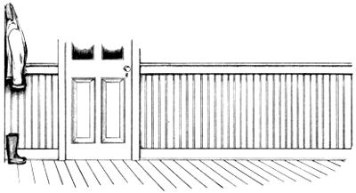
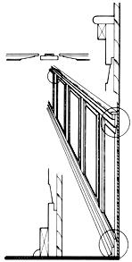
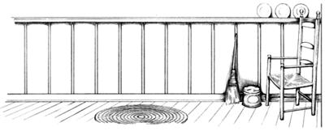
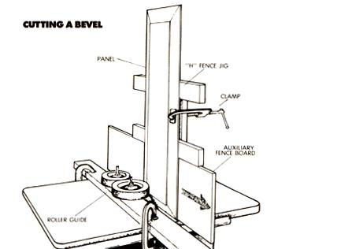
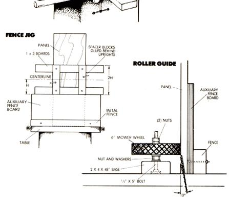
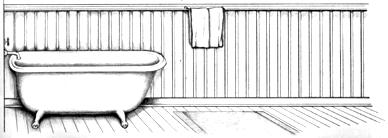

Two Ways To Wainscot
January/February 1989
Formal or functional, a half-paneled wall is certainly far, far better than none.
IT IS SAID THAT SOMEONE ONCE remarked that "90% of British tradition is less than a century old." Fact or fiction, he no doubt had to confess that wainscoting had a much more hoary place among the ranks of the legitimate. After all, Shakespeare was a pup when English woodcrafters were importing select oak to decorate the walls of contemporary trendsetters-and when compared to the stone or wattle of the time, wainscot paneling must have seemed the greatest discovery since the longbow.
Traditional or not, wainscot (a term that covers any use of paneling on the lower part of a wall) has a lot going for it. In a practical sense, it's hard to beat the durability of wood in places that get kicked, scraped and thumped as a matter of course. In fact, dry wall or plaster that's been damaged to the point of cracking can often be covered with wood at less expense than would be required to restore the walls outright.
Better yet, a well-planned wainscot job is adaptable to almost any room. Panel widths and shapes can be modified to suit doorways, windows, fireplaces and other details that, aside from their function, sometimes seem to get in the way. Chair rails can be muted for a modern look, or extended to serve as a working shelf in a bath or kitchen area.
A lower-wall treatment also offers an opportunity to experiment with the change of textures and colors, either to put some life into an uninspired space, or to lend an air of formality to a room that needs a bit of urging.
Built to Please
Though all wainscot may have a distinctive look, there's no end to variety in the ways in which it's presented. Probably most familiar is the raised-panel style you might see in a library or study-individually framed sections with beveled or routed borders, a lower baseboard, and a horizontal chair rail along the top. Alas, that bit of convention doesn't come cheaply, since the panels are solid wood and must be thick enough to display their relief.
Another treatment uses beaded tongue and groove strips, capped and skirted with casing or molding to define the horizontal borders; the vertical field may be framed or left to run continuously. This style is less elegant but still offers a substantial surface that can be installed without a lot of difficulty.
Beyond that, the limits are few and far between. The wainscoted section needn't be solid wood. Framed fabric or wallpaper, decorative paneling, brick veneer or woven lattice have all been used in one way or another to create a new look or to complement an existing wall.
Raised Panel
Since the raised-panel design is the most difficult to reproduce, it won't hurt to begin by explaining the process. The beauty of our approach-worked out by MOTHER's research-shop staffer Dennis Burkholderis that it requires only a lumberyard variety of clear white-pine components: 1 X 12s for the panels, and narrower one-bys for all the other pieces.
RAISED PANEL WAINSCOT
This style uses a framework to hold the "floating" panels in place.
To be fair, though, we must admit that the job can't be done right without a table saw and two blades-a sharp combination blade with a high tooth-count to cut the bevels cleanly both with and against the grain, and a quality dado head that will allow you to make consistent grooves and rabbets (stepped edges). Having access to a router table that will accept a 1- or 1 1/2-hp router is also a big help, since it'll expand your ability to cut grooves and edges in the shapes you want.
Keys to the simplicity of the project are two accessories-a fence jig to keep the panels from kicking out of square while you're cutting the bevels, and a roller guide to hold the panels firmly against the saw fence during the same operation. Plans for both are detailed in the accompanying illustrations, and each can be made from scraps and workshop discards in a matter of minutes.
Each panel "floats" in a frame consisting of vertical pieces, called stiles or muntins, and horizontal members, called rails. Rabbets cut into the back sides of these frame parts match similar recesses made in the panels' face edges; the stiles have short tongues at their ends to keep them in place. The structure is held against the wall with a 1 X 3 baseboard strip and shoe molding at the floor, and a 2 1/2" round-edged cap and a strip of bed molding at the top.
Taken in steps, working up enough pieces to complete a wall shouldn't be a major undertaking. Start by cutting all the panels to your predetermined width and length (our 1 X 12s were each 32" long). Then set the angle of the saw blade and its cutting height. For a 3/4"-thick board, the teeth tips should be approximately 2 1/4"off the table when the blade's cocked at 10°-but don't judge these figures as carved in stone. Your goal should be to keep at least 1/4" of uncut material at the edge of the board while creating a blade's width shoulder at the edge of the raised central field.
With the saw set and the roller guide clamped to the table, hold the panels upright on their long edges, and cut the two side bevels of each. Because you'll have to set up a jig to make the shorter end-bevel cuts, it's best to finish up the sides of all the panels first.
Having done that, bolt the auxiliary fence board to the saw fence, and clamp a ladder-shaped jig squarely to the center of any panel's back face. If you measured and cut the auxiliary fence and jig correctly, there should be an equal measure of panel above and below the jig, and its frame should just clear the top edge of the fence board. Cut one bevel, then flip the assembly end for end and cut the other. Transfer the jig to the next panel, and so forth, to complete your bevel cuts.
The remaining panel work can be done with a dado blade or a rabbeting bit in the fixed router. All that's required is to dress the edges of each panel to form a squared perimeter lip about 1/2" wide and 1/4" thick. In either case, the work is held flat against the machine's table.
Next, tackle the stiles that fit between the panels. They're the same length as the panel boards and can be trimmed down to 2 1/4" from 1 X 3s for a clean, sharp-edged appearance. Use your dado blade to make 1/4"deep, 9/16"-wide rabbets in the back edges of each piece; then set the blade to a 1/2" depth, and trim the face ends to make an upper and lower tongue on each stile.
The rails that complete the upper and low er framing are cut from 1 X 4s and 1 X 6s, respectively. Again, a 1/4" X 9/16" rabbet is cut into each piece, but only on one edge this time. With that completed, the only other profile cutting to consider is working a shape into the facing edge of the cap that makes up part of the chair rail. There's no reason why you can't buy casing or window stool molding for this, but if you're forming the stock yourself, a few good bit choices would in clude a 3/8" corner round, a full half-round or a Roman ogee. Any substantial cutting would call for a 1 1/2-hp router.
The design of the base and cap trim should be left to your judgment, since it may reflect what's already in the room. If you need a guide, however, notice that the baseboard with its shoe molding strip is about twice the height of the correspond ing bed molding; if anything, you want the structure to ap pear slightly bottom-heavy-an illusion that can be fine-tuned by experimenting with the width of the chair rail cap.
Beaded Strips
In a space where a rustic or cottage look carries more weight than something formal, beaded 3/4" boards can work well as wainscot. There are plenty of choices: 1 X 3 strips, grooved 1 X 4s or wider 1 X 6 boards. If you're pleased with a smooth surface, you might even consider tongue-and-groove subflooring.
BEADED STRIP WAINSCOT
This style can be made from most any lumber and is easy to install.
Naturally, beaded boards-in which ribs and reliefs have been cut into the face-are more expensive than unmilled lumber. But with a minimum of effort you can use your table saw to slightly bevel the edges of any plain board to fancy it up a bit. Set the saw blade at a 45° angle and at a depth shallow enough to remove just 1/4" or so of wood. Adjust the fence to position your work, then run the stock through in 10' lengths until it's all been cut. Reset the fence, if needed, to cut the other side, then pass the boards through again, this time starting with the ends that left the saw last.
What if you have a supply of good square-edged boards or can't find tongue-and-groove strips in the quality you're looking for? Not to worry-use a dado head on the saw (or a slot cutter in the router) to cut 1/2"-deep, 1/4"-wide grooves into the edges of each board, then switch to the combination blade to make 1/8"-wide splines of 1/4" plywood to join adjacent grooves.
There's no reason, of course, why you could not use hardboard or thinner paneling scraps to make the spline sections if the wainscot boards are thinner than 3/4". Once the grooves have been completed, you can cut the full-length boards to their shorter finished size.
To save the work of cutting tongues on the end of each vertical board (and rabbets in the trim to match), it's OK to fasten the boards permanently by nailing the base and bed moldings to the studs in the wall, securing the wainscot behind the horizontal moldings.
A bead of adhesive on the back of each board will keep the vertical section from falling while you attach the molding strips. A 2" cap at the top and shoe molding at the bottom will complete the job.
Finishing Up
Depending upon what's above the wainscot section, you may want to paint or stain the wood below. Assuming you sanded the components before assembling the wall, a light surface sanding will be all that's needed to get the grain ready.
If you paint, be sure to fill all the nail holes and gouges and use a primer-sealer first. The finish coat should be a semigloss, since it will stand up to cleaning and abuse better than a flat finish.
Stain, in itself, acts as a wood sealer, but it should be covered with a finishing oil, or a polyurethane top coat, if you feel the wood needs more surface protection. Modern gel stains are a good choice for vertical applications such as these because they're less likely to spatter. To save an extra step, some manufacturers make a stain and polyurethane that colors, seals and coats the grain all at once.
PLANNING MAKES PERFECT
BEFORE LEAPING HEADLONG INTO your wainscoting project, it would be worthwhile to know a few things about halfpaneling in general. Even in tall rooms, the finished height of the wainscot isn't necessarily determined by the height of the ceiling. A chair rail that rests between 40" and 42" from the floor looks fine in nearly all spaces and still falls below the level of most switch plates.
On the other hand, the rail won't pass beneath windowsills, shelving and so forth, so you must work around such bothersome details-a process that often calls upon imagination more than skill. If, for example, a door casing splits a panel, you can use a wider stile on either side of the door-along with narrower panels-to create a balance. If the area beneath a window is too wide to accommodate one panel, but too narrow to fit two, try turning the panel horizontally at that and other window locations in the room.
It's best to lay out the position of panels beforehand, based on the distance between corners and the door and window frames. By treating each individual run as a complete section, you can make the panel widths uniform by dividing the section into equal spaces. Thus, an unbroken section 6 1/2' in width can consist of six framed panels made to the dimensions described in the main article: 10 1/4" of face for each panel, and a total of 15 3/4" for the seven stiles.
Finally, there are two ways to mount wainscot to the wall. One way is to cut and remove the dry wall below the chair rail. This allows the wainscot to be recessed for a more built in look-but also means fastening two horizontal strips, or nailers, to the exposed studs to give the panels something to brace against. The other is far easier. Simply locate the studs behind the dry wall, and nail the rails to them. The lower rail can be fastened to the wall's bottom plate, as well.
|
 |
 |
 |
 |
 |
 |
|
 |
 |
|